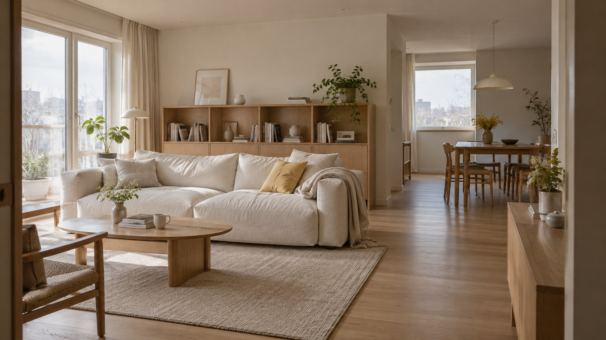

집을 바꾸는 기준은,
그 안에서 보내는 하루.
집에서 보내는 시간과 자주 사용하는 물건부터 살펴봐요. 보기 좋은 모습에 편안한 동선과 수납을 더해, 나를 닮은 공간을 만들어요.
동선부터 소재까지,
생활에 맞춰 하나씩.
생활에 맞는 동선
요리하고 쉬고 일하는 생활의 흐름에 맞춰 공간을 정리해요.
필요한 곳에 수납
물건의 양과 사용하는 습관을 살펴 쓰기 편한 자리를 찾아요.
취향을 담은 소재
좋아하는 색과 질감을 연결해 오래 머물고 싶은 분위기를 만들어요.
03좋은 시작을 위해,
좋은 시작을 위해,
이야기할 내용을 정리해요.
모든 것이 정해져 있지 않아도 괜찮아요.
지금 알고 있는 내용부터 편하게 알려주세요.
함께하는 과정처음의 생각부터,
처음의 생각부터,
디테일까지 함께해요.
- 01
먼저 들어요.
현재 공간과 원하는 변화, 일정과 예산을 함께 살펴봐요.
- 02
방향을 정해요.
현장의 조건과 필요한 범위를 확인하고, 선택의 기준을 정리해요.
- 03
공간으로 옮겨요.
협의한 범위에 맞춰 디자인을 구체화하고 적용할 디테일을 확인해요.
궁금한 점을 살펴보세요.
살고 있는 집도 상담할 수 있나요?
현재 공간의 상태와 원하는 변화를 알려주세요. 전체 공사부터 필요한 부분의 변화까지, 가능한 범위를 함께 살펴봐요.
비용은 어떻게 정하나요?
공간의 상태와 면적, 필요한 서비스 범위에 따라 달라져요. 상담에서 조건을 확인한 뒤 진행 범위와 비용을 안내해요.